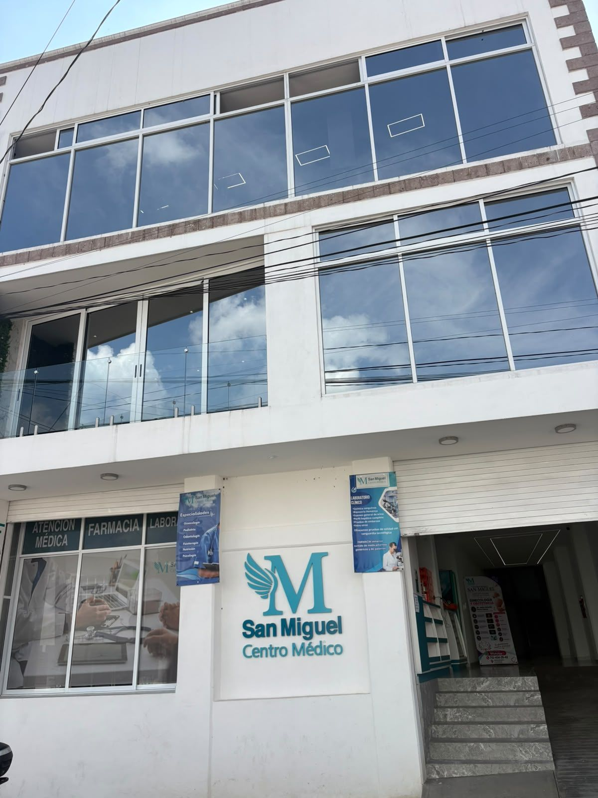
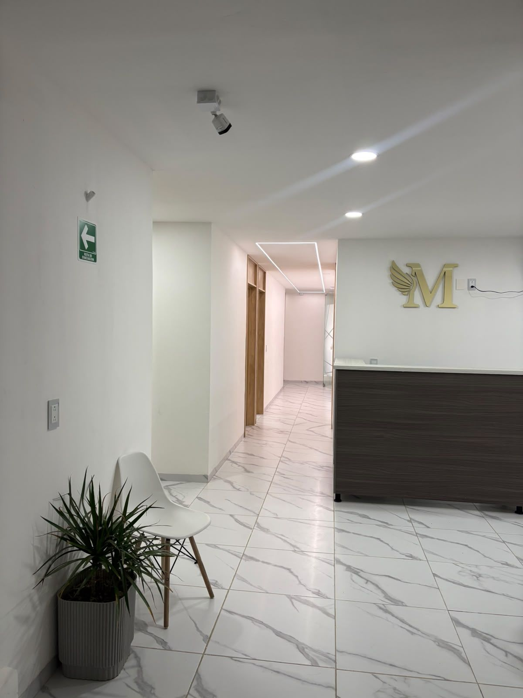
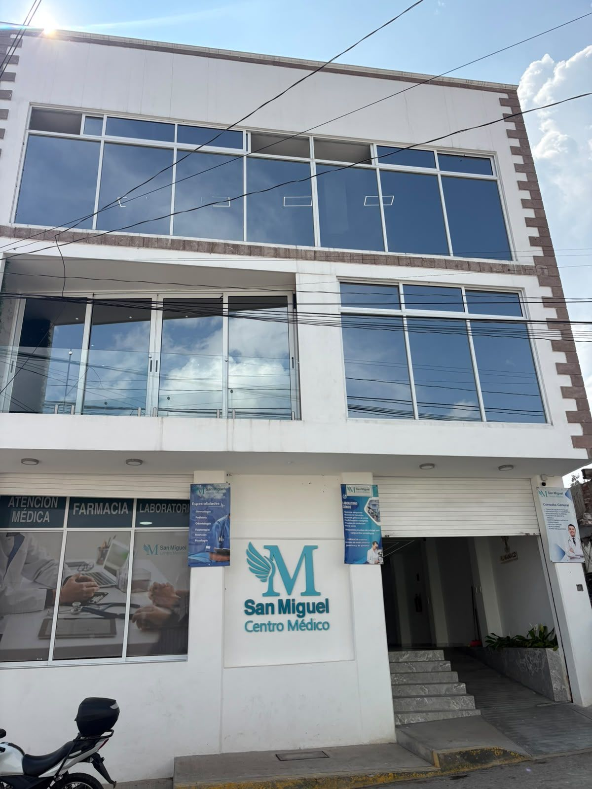

Ginecología y obstetricia
Dr. Jesús Orlando Pérez García. Control de embarazo, Papanicolaou, colposcopía y ultrasonido 2D, 3D y 4D.
Lun, mié y vie · 9:00 am a 2:00 pm
Consulta médica, especialistas, laboratorio de análisis clínicos, farmacia y Unidad de Rehabilitación Integral, detrás de la iglesia.

Ginecología y obstetricia, pediatría, cardiología, nutrición, psicología, odontología y más. Agenda tu cita por WhatsApp.

Laboratorio de lunes a sábado de 7:00 am a 12:00 pm y farmacia todos los días de 7:00 am a 9:00 pm.
El Dr. Jesús Orlando Pérez García, ginecólogo y obstetra, te acompaña en cada etapa: control de embarazo, revisiones ginecológicas y ultrasonido estructural y obstétrico, aquí en Chapa de Mota.
San Miguel Centro Médico abrió sus puertas el 2 de marzo de 2026 para que las familias de Chapa de Mota y sus alrededores tengan consulta médica, especialistas, laboratorio de análisis clínicos, farmacia y rehabilitación sin tener que salir del municipio.
Dr. Jesús Orlando Pérez García. Control de embarazo, Papanicolaou, colposcopía y ultrasonido 2D, 3D y 4D.
Lun, mié y vie · 9:00 am a 2:00 pmConsulta para toda la familia: diagnóstico, tratamiento y seguimiento.
9:00 am a 2:00 pm y 5:00 a 9:00 pmDr. Héctor Méndez Blas, Radiología e Imagen: abdomen, renal, pélvico, Doppler, obstétrico y más.
Miércoles y sábado · con previa citaDra. Adriana Alaniz. Cuidando la salud de tus peques, desde recién nacidos.
Cada 20 días aprox. · pregunta la fechaValoración integral y chequeo de tu corazón. Visita mensual con cupo limitado.
Próxima visita: 5 de diciembreBiometría hemática, química sanguínea, estudios ginecológicos, hormonales y examen general de orina.
Lunes a sábado · 7:00 am a 12:00 pmMedicamento genérico y de patente, material de curación y artículos de cuidado personal.
Lunes a domingo · 7:00 am a 9:00 pmDra. Gabriela Reyna Narváez. Limpiezas, resinas, extracciones, brackets, endodoncia, prótesis y muelas del juicio.
Lunes a sábado · 9:00 am a 2:00 pm y 4:00 a 7:00 pmLesiones de huesos, articulaciones, músculos y tendones.
Cada 15 días · miércoles o viernesEsguinces, lesiones musculares y deportivas, masaje descontracturante y parálisis facial.
Fisioterapia por las tardes · Quiropráctico martes, cada 15 díasGriselda Mondragón González. Acompañamiento emocional y en procesos de duelo y pérdida.
Miércoles · desde las 3:00 pmLic. Karina Lorenzo Narváez. Planes de alimentación personalizados.
Horario con previa citaEstudios realizados por el Dr. Héctor Méndez Blas, especialista en Radiología e Imagen.
Algunos estudios requieren preparación (por ejemplo, vejiga llena). Pregúntanos por WhatsApp antes de tu cita.
La Dra. Gabriela Reyna Narváez cuida tu salud dental de principio a fin: desde una limpieza hasta brackets, endodoncia o cirugía de muelas del juicio, sin salir de Chapa de Mota.
Elimina sarro y placa para prevenir caries y cuidar tus encías.
Restauraciones del color de tu diente para reparar caries sin que se note.
Retiro seguro y cuidadoso de piezas dañadas.
Ortodoncia para alinear tus dientes y mejorar tu mordida.
Tratamiento de conductos para salvar dientes con dolor o infección.
Recupera piezas perdidas, la función y la estética de tu sonrisa.
Extracción quirúrgica con valoración previa y cuidado posoperatorio.
Escríbenos y la doctora te orienta.
Preguntar por WhatsApp →Ya no tienes que viajar para ver a un especialista. Agenda tu cita por WhatsApp y te confirmamos el día de su consulta.
Las consultas de especialidad son con previa cita. Escríbenos por WhatsApp y te apartamos tu lugar.
Desliza para ver todos los días →
| Servicio | Lun | Mar | Mié | Jue | Vie | Sáb | Dom |
|---|---|---|---|---|---|---|---|
| GinecologíaDr. Pérez García · 9 am – 2 pm | · | · | · | · | |||
| UltrasonidosCon previa cita | · | · | · | · | · | ||
| PsicologíaDesde las 3 pm | · | · | · | · | · | · | |
| TraumatologíaCada 15 días | · | · | · | · | · | ||
| QuiroprácticoCada 15 días | · | · | · | · | · | · | |
| Laboratorio7 am – 12 pm | · | ||||||
| OdontologíaDra. Reyna Narváez · 9–2 y 4–7 | · | ||||||
| Farmacia7 am – 9 pm |
Sabes cuánto vas a pagar antes de venir. Los estudios, ultrasonidos y análisis de laboratorio se cotizan aparte.
Agendar por WhatsAppPrecios en pesos mexicanos por consulta.
Paquetes preventivos con estudios y consulta incluidos. Pregunta por las promociones del mes.
Conoce tu tipo de sangre de forma segura y confiable. No requiere ayuno.
Revisión preventiva completa con el Dr. Jesús Orlando Pérez García.
Imágenes de alta resolución en 2D, 3D y 4D para ver el desarrollo de tu bebé.
Control de embarazo, revisión ginecológica y ultrasonido estructural y obstétrico con imágenes de alta resolución, aquí en Chapa de Mota.
— Dr. Jesús Orlando Pérez GarcíaCada semana publicamos qué especialistas vienen a Chapa de Mota y las promociones del mes.
Las consultas de especialidad son con previa cita. Escríbenos por WhatsApp al 712 434 2542 y te apartamos tu lugar.
Consulta general $300, odontología $300, nutrición $350, psicología $350, fisioterapia $450, pediatría $600, quiropráctico $600, ginecología $700, traumatología $850 y cardiología $1,200. Los estudios y ultrasonidos se cotizan aparte.
El Dr. Jesús Orlando Pérez García atiende lunes, miércoles y viernes de 9:00 am a 2:00 pm, con previa cita. Algunas semanas abre un día con horario extendido hasta las 5:00 pm; pregúntanos por WhatsApp.
Miércoles y sábado, con previa cita. El ultrasonido estructural y obstétrico se realiza en 2D, 3D y 4D.
Medicina interna y cardiología una vez al mes (próxima visita: 5 de diciembre), pediatría cada 20 días aprox., traumatología cada 15 días (miércoles o viernes), quiropráctico cada 15 días (martes) y psicología los miércoles desde las 3:00 pm.
La Dra. Gabriela Reyna Narváez realiza limpiezas, extracciones, resinas, prótesis, brackets, endodoncia y cirugía de muelas del juicio. La consulta de valoración cuesta $300 y después te damos tu presupuesto.
De lunes a sábado de 7:00 am a 12:00 pm. La prueba de grupo sanguíneo y factor Rh cuesta $100 y no requiere ayuno.
En Chapa de Mota, Estado de México: atrás de la iglesia, a un lado del Centro de Salud.
Escríbenos por WhatsApp al 712 434 2542 y te damos tu cita. Corre la voz: ya hay centro médico de especialidades en Chapa de Mota.